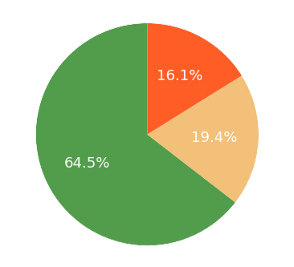
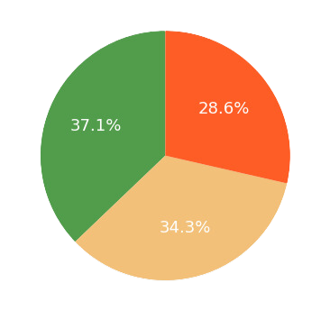
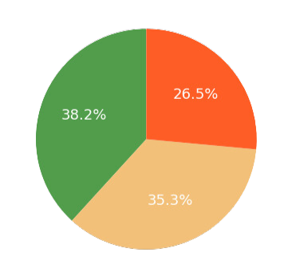

Home
Learn
Status Map
Reporting
Explore Issues
General Cleanliness

Waste Sorting Area

Waste Bins

Open
|
In Progress
|
Resolved
Search
All Issues
Open Issues
In-Progress Issues
Resolved Issues
×
Instructions for Navigating the Status Map:
Use the
filter buttons
at the top to display different sets of issues:
All Issues:
View all reported issues on the map.
Open Issues:
Filter to see only currently unresolved issues.
In-Progress Issues:
Display issues that are being actively addressed.
Resolved Issues:
Check issues that have been marked as resolved.
To find a specific issue, use the
search bar
by entering the issue ID. The map will automatically zoom to the issue location.
Click on any issue marker on the map to view more
details
about the issue.
If necessary, you can mark an issue as
resolved
or
reopen
it from the details popup.
Zoom in and out on the map to explore different areas and view reported issues.